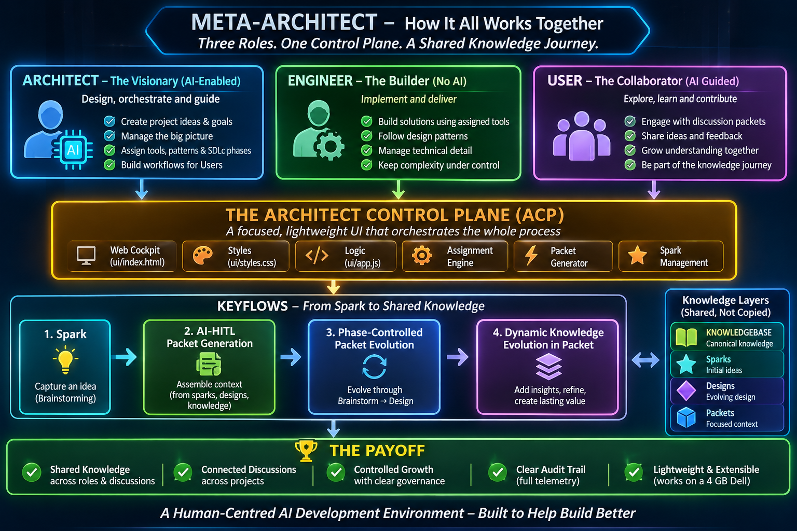
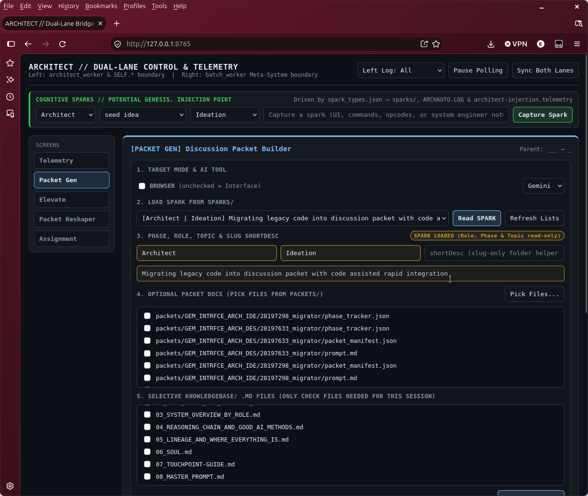
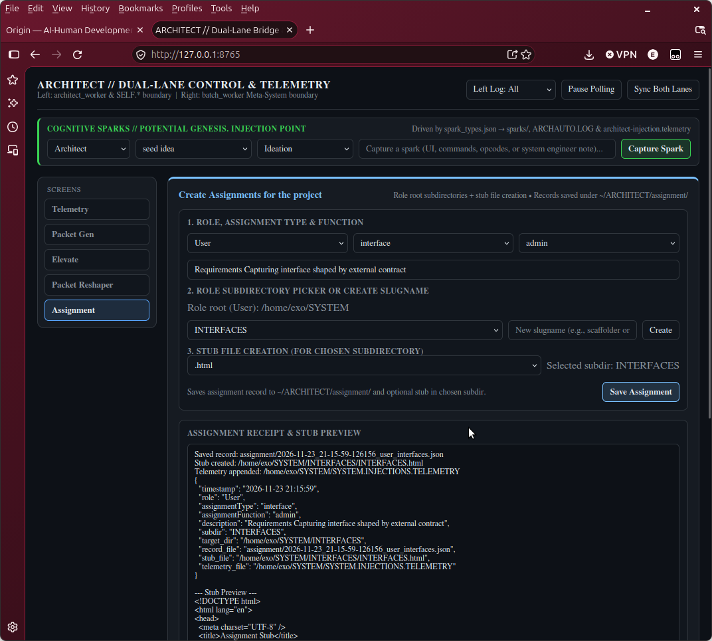

A project case study · 23 November 2026
Meta-Architect
The Architect Control Plane: a human-centred AI development environment. Three roles. One control plane. A shared knowledge journey.
01 · Understand
The architecture at a glance
Meta-Architect is an experiment in making AI-assisted development more controlled, observable and accessible. Its Architect Control Plane (ACP) brings together idea capture, focused AI discussion packets, development workflows and knowledge evolution.

Three roles, deliberately separated
Architect
Authors the environment, creates tooling, establishes contracts and governance, and handles AI complexity.
Engineer
Uses prepared tools to manage projects, apply patterns and assemble workflows without managing prompts or AI behaviour.
User
Works through structured discussion packets and guided workflows, contributing intent and feedback without carrying the machinery.
Management responsibility does not require AI exposure. The gradient of AI-complexity exposure is a deliberate architectural boundary: complexity is concentrated upstream rather than leaking into the downstream roles.
The governing principle
FaSaP — Functional as Simply as Possible. The goal is the smallest system that delivers the required functionality reliably: no unnecessary infrastructure, abstraction or engineering for its own sake. The 4GB Dell and freemium constraints are part of the design challenge, not incidental footnotes.
02 · Believe
From conceptual model to working control plane
The architecture is shaped by practical experience with AI failure modes: topic drift, hallucination, truncation and loss of alignment with the intended objective. Meta-Architect does not claim these problems have disappeared. It applies focused sessions, contract-driven packets, role boundaries and governance to contain and manage them.
Its keyflow connects individual ideas and discussions to a wider body of work:
The intention is to avoid disconnected chat threads and repeatedly reconstructed context. Discussions have a purpose, boundaries and a relationship to the wider work. Telemetry is beginning to preserve an evidence trail of activity and development history.
“I'm no longer just using AI to develop a system. I'm using the system to organise how I use AI to develop the system.”

Telemetry has a second purpose beyond operational visibility: it is the early material for a self-describing development history. The longer-term aim is to weave that history into a reconstruction of how the system came into being, potentially including retrospective documentation and build-story videos. The system is beginning to record the evidence from which its own evolution can be told.
03 · Explore
Activation — from intent to genesis
Activation is a lightweight assignment engine that turns an intention into a structured, traceable starting point for work. It creates assignments for any of the three roles and gives each new piece of work a destination, an initial artefact and a recorded origin.
Three dimensions shape an assignment
Assignment form
Tool · Interface · Process · Data
The kind of thing being created.
Shaping function
Builder · Packager · Admin · Dispatch
The function shaping the assignment.
Role & workspace
Architect · Engineer · User
Who owns the work and where it belongs.
These dimensions form a configurable assignment tuple in a dynamic data structure. Activation loads the selected role's existing directory structure, allows an existing destination or a new one, and creates a placeholder artefact. Current placeholder formats are HTML, JSON, Markdown and Python; these are deliberately simple starting points, not a claim of fully dynamic generation.
Every creation gets a beginning
A Genesis record captures the origin and intended purpose. The resulting file is ready to evolve: an HTML file can display its own creation record, while JSON can provide structured input for subsequent worker processes. Each creation is also written to the relevant role's evolution telemetry, preserving what was created, where, why and for whom.
The administration process takes less than a minute. Activation moves the control plane from thinking about work to establishing work — with identity, purpose and provenance from the outset.

04 · Where next?
Two directions for the next evolution
From knowledge copies to a shared second brain
Today, discussions receive an isolated working copy of the Knowledge Base. Changes are developed there, pass through a human review gate, and the working copy is purged once resolved. This provides control, but introduces duplication.
The intended direction is a single shared Knowledge Base that can serve multiple discussions, with immutable established sections, abstracted changeable sections and lifecycle-based appendable sets. Longer term, this could mature into a shared second brain with distinct long-term knowledge, active working knowledge and project tracking. This is a design direction, not a capability claimed as implemented today.
Role injection — from reusable pattern to working interface
The next major capability is to inject tools, phases and workflows into the interface of the role that needs them: Architect-created tools become available to the Engineer; Engineer-composed workflows become available to the User. The intended experience is a simple, clickable process in the receiving role's interface, without exposing the machinery behind it.
One pattern. Many uses. Reuse, role boundaries and minimal configuration are another application of FaSaP.
Meta-Architect is an ongoing experiment in human-directed, AI-assisted development.
Built to help build better.